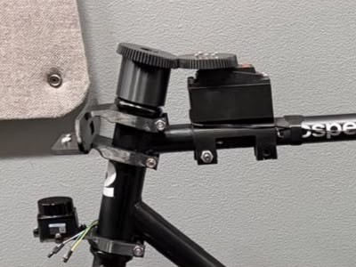
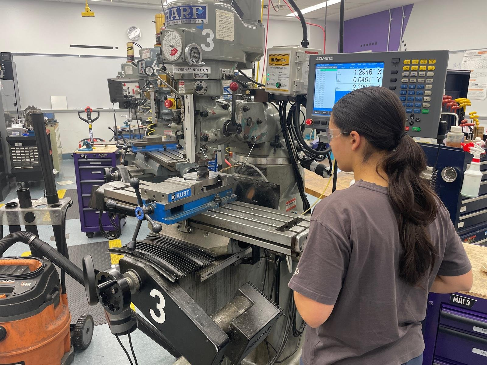
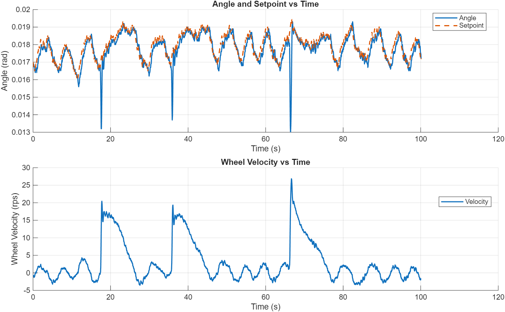

Autonomous Self-Balancing Bicycle
A modular, open-source bicycle that balances itself with a high-inertia reaction wheel.
Overview
From February to May 2026, I worked on a small team project to build a bicycle that balances itself using a high-inertia reaction wheel. We wanted to take on a hard controls problem and bring mechanical, electrical, and software design together in one project. The bike is designed as a modular, open-source platform for research on two-wheeled self-balancing vehicles: everything mounts to the tubular frame with 3D-printed clamps, so sensors and actuators can be added or moved without drilling or welding. The long-term goal is a driverless bicycle that navigates on its own; this phase focused on getting it to balance.
We co-authored a technical paper on the platform, and published the full CAD, firmware, and a bill of materials for the under-$1,000 bare vehicle: paper, code and CAD on GitHub, bill of materials.
My role
As Lead Mechanical Engineer, I led the mechanical design, engineering, and manufacturing of the bicycle, including the reaction wheel, motor interface, custom steering system, and 3D-printed mounts. I also contributed to the control system, including the STM32-based balance controller and PD-loop tuning, integrating the mechanical design with the embedded electronics and control software.
Design & build
Reaction wheel
The heart of the system is a custom high-inertia reaction wheel, driven by a 100KV high-torque brushless DC outrunner motor through an ODrive-based motor controller, under STM32 control. I performed hand calculations to determine the wheel's dimensions, referencing previous publications on similar reaction-wheel systems. I optimized the wheel's mass distribution to maximize rotational inertia, removing material near the center so most of the mass sits at the rim, while minimizing weight and ensuring sufficient structural strength to withstand centrifugal stresses at high speeds.
One lesson cost us time: we started with an industrial NEMA motor, but it couldn't change direction fast enough with the heavy steel reaction wheel on it, and we only switched to the more expensive brushless motor quite late.

Balance control
A high-frequency PD loop on the STM32 sets the reaction wheel's torque from the difference between the bike's tilt, measured with a filtered IMU, and a balance setpoint. Instead of a fixed setpoint, an adaptive outer loop shifts the balance point based on the average reaction wheel torque. That acts like an integral term: it removes steady-state error and stops the reaction wheel from spinning up to its maximum speed (saturating) during persistent disturbances. The balance controller runs on its own battery, separate from the navigation computer, so the bike stays upright even if the navigation software crashes.
Steering
I designed and built a custom bevel gear steering system so a servo can steer the bike. The bike's fork and head tube sit at an angle to the top tube, so off-the-shelf bevel gears wouldn't line up; I designed custom bevel gears at the matching angle and 3D printed them. The angled gears also let the servo, a 160 kg·cm, 270°, 24 V digital RC servo, sit as close as possible to the top tube, which keeps its weight near the frame for better stability. The gears have a 1:1 ratio and are printed around a mount that clamps to the inside of the front tube with a screw-based clamp.

Manufacturing
The hardest part to make was the flywheel. I first tried to machine it entirely on the mill, but couldn't hold the workpiece firmly enough. Next I cut it on the waterjet, but finding the exact center of the stock was difficult, even with a Delrin jig, and the waterjet left inaccuracies and a rough surface finish. So I put it back on the mill for a finishing pass to make every surface accurate, which made a big difference to how much the bike wobbled. I also made an aluminum part to interface easily between the motor and the steel flywheel.

Results
Tuning the PD loop was the hardest part of getting it to balance. At first the bike only stayed up for a few seconds before the reaction wheel saturated; by the end it could balance indefinitely, limited only by its battery and strong wind, and it kept its balance while driving. It recovers from a decent amount of disturbance, though not perfectly.


Next steps
Next, the plan is an open-source, SLAM-based ROS2 autonomy stack running on an NVIDIA Jetson Orin Nano with a 2D LiDAR and a stereo depth camera, so the bike can map its surroundings and navigate on its own. The bike will also be a testbed for reinforcement learning for steering control, blended with the existing reaction wheel stabilization, with simulation-ready files for training.